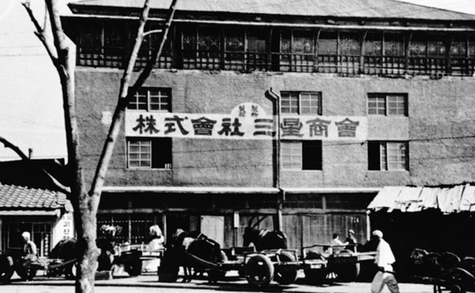

1938
삼성의 시작, 별표국수
최초의 로고는 서구식 우표와 유사한 복잡하고 정교한 장식용 선과 원형의 목판 프레임을 특징으로 삼았다. 원 안에는 세 개의 검은 별과 함께 국수의 원료인 밀 이삭(맥수)이 촘촘히 그려져 있어 농업에 기반을 둔 식량 유통업의 본질을 가감 없이 시각화했다. 창업주 이병철 회장은 '삼성'이라는 사명의 '삼(三)'에 '크고, 강력하고, 영원하라'는 뜻을 담았으며, '성(星)'을 통해 '하늘의 별처럼 밝고 높고 깨끗하게 빛나라'는 포부를 부여했다
1938
삼성의 시작, 별표국수
최초의 로고는 서구식 우표와 유사한 복잡하고 정교한 장식용 선과 원형의 목판 프레임을 특징으로 삼았다. 원 안에는 세 개의 검은 별과 함께 국수의 원료인 밀 이삭(맥수)이 촘촘히 그려져 있어 농업에 기반을 둔 식량 유통업의 본질을 가감 없이 시각화했다. 창업주 이병철 회장은 '삼성'이라는 사명의 '삼(三)'에 '크고, 강력하고, 영원하라'는 뜻을 담았으며, '성(星)'을 통해 '하늘의 별처럼 밝고 높고 깨끗하게 빛나라'는 포부를 부여했다

삼성상회
창업기 삼성상회 설립과 별표국수 로고의 사업보국 이념삼성그룹의 기업 정체성의 시원은 1938년 창업주 호암 이병철 회장이 대구 서문시장 인근에 설립한 '삼성상회(三星商會)'에서 출발한다. 당시 주력 제품으로 출시된 '별표국수'의 포장지에 각인된 로고는 삼성이 브랜드 마크를 붙인 최초의 상품이자, 현재 삼성 CI의 모태가 되었다.